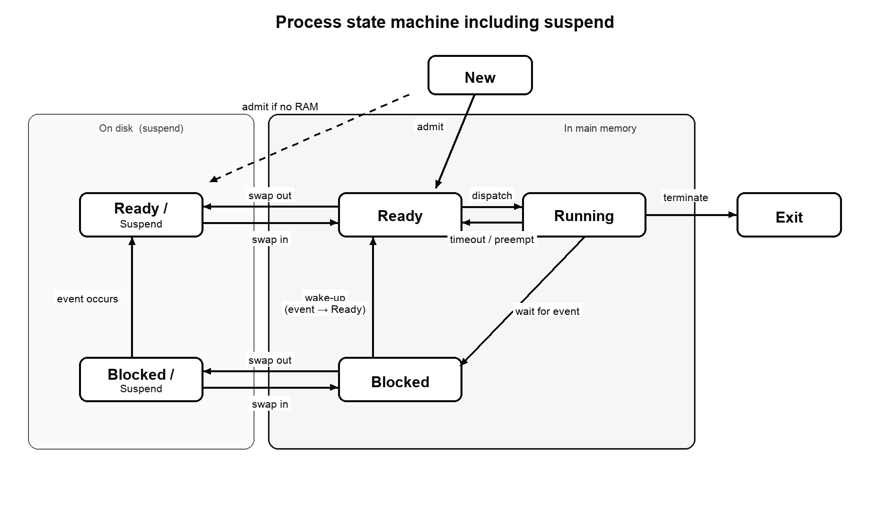

Lecture 05. A process is a program in execution: code, data, a current state, and resources. He is not required to repeat last year’s sentence. Each room: the machine, then a twist, then True/False. Written papers with full answers sit at the end. Linux fork / exec / waitpid as a short shop story is OS1. Threads are OS2.
You need C1–C4 before the Linux lines. The states and the PCB you can read now. C without stories: C for OS.
1. What a process is
The lecture’s job for any modern OS: process management — allocate resources, exchange information, synchronise.
Books try several sentences. Keep two pieces: code and the data that belongs to that code. While it runs, you can point at: identifier, state, priority, program counter, memory pointers, register context, I/O status, accounting.
Fair exam sentences: “a program in execution,” “an instance of a program running on a computer.” File on disk = program. Running copy = process. Two Word windows: one program file, two processes.
On one processor, several processes take turns in time (multiprogramming). On several processors they can run at the same instant. Concurrent ≠ same instant. That split already sat on OS11.
In a multithreaded system the process still owns the resources. The concurrent execution streams are threads inside it. Full thread story: OS2.
True or false. A process is an instance of a running program.
Yes. That is one of the lecture definitions, and a Gräßner Y/N that comes back.
Twist
True or false. If two processes run on one core, they execute the same instruction in the same instant.
No. Uniprocessor multiprogramming interleaves them. Same instant needs more processors, or at least more cores.
True or false. In a multithreaded system the thread owns the files and the address space; the process is only a name.
No. The process keeps resource ownership. Threads are the concurrent streams inside it.
2. The process block (PCB)
The OS keeps one record per process. Names: process block, process control block, PCB. Fields you must be able to name:
Identifier (handle) — unique. Linux: PID.
State — running, ready, blocked, …
Priority — relative to others.
Program counter — address of the next instruction.
Memory pointers — code, data, extra blocks.
Context — register values while it ran.
I/O status — open files, devices, outstanding requests.
Accounting — CPU time used, limits.
A new exam can ask “what must the OS store to restart this process later?” You list: PC, registers, state, memory map — not “Chrome.”
Short. Name at least four things stored in a process control block.
Identifier, state, priority, PC, memory pointers, register context, I/O status, accounting. Four of those is enough.
Twist
True or false. The whole user stack lives inside the PCB.
No. The stack is part of the process image (user memory). The PCB may hold a stack pointer. A Gräßner Y/N “the stack is part of the PCB” is false.
3. Why five states, not two
Simplest model: running or not running. A dispatcher picks the next “not running” job.
Trap: that next job might only be waiting for I/O. You would dispatch a blocked process. So split “not running” into ready (can run now) and blocked / waiting (needs an event).
Add New (created, not yet admitted — PCB exists, code may not be in RAM yet) and Exit (released). That is the five-state model.
On one processor, at most one process is Running.
Twist
True or false. Two-state “running / not running” is enough, because the dispatcher can always run whoever is first in the queue.
No. The oldest in the queue might still be waiting for I/O. You must not treat “not running” as one bag.
Short. Name the five process states.
New. Ready. Running. Blocked (waiting). Exit. A paper may say “waiting” instead of blocked. Same state.
4. Transitions
→ New: create the process.
New → Ready: OS can take more work (memory and process count allow it).
Ready → Running: dispatcher picks one. Which one is scheduling (later lecture).
Running → Exit: finished, or killed (see the termination table).
Running → Ready: time slice over, or it yields, or a higher-priority process became ready.
Running → Blocked: waits for I/O, memory, a system call that cannot finish now.
Blocked → Ready: the event happened. Ready is not Running. It waits for the dispatcher.
Ready → Exit and Blocked → Exit: some systems let a parent kill a child from any state. If the parent dies, children may die too.
Westerkamp “wake-up” = Blocked → Ready, not Blocked → Running.
Twist
True or false. When the disk finishes, the waiting process goes straight to Running.
No. Wake-up = Blocked → Ready. Then it competes. The scheduler may run it now, or later.
True or false. A timer tick can move Running → Ready so someone else can run.
Yes. Maximum uninterrupted time. Alternative: the process yields. Or a higher-priority process becomes ready and preempts.
5. Create and kill
How a process is born (lecture table): new batch job; interactive logon; OS creates a helper (print); an existing process spawns a child (Linux: fork).
How it dies: normal completion; time limit; no memory; bounds violation; protection error; arithmetic error; time overrun waiting; I/O failure; invalid instruction; privileged instruction; data misuse; operator / OS; parent dies; parent requests kill.
You do not memorise every row. You group: the process finished; it broke a rule; it waited too long; someone with authority stopped it.
True or false. A parent process typically has the authority to terminate its children.
Yes. “Parent request” on the termination table. Linux: kill to the child’s PID. “kill can only terminate” is still false — the signal is an argument.
Twist
True or false. A process is only created when a human types at a terminal.
No. Batch job, OS helper (print), spawn from an existing process. Logon is one row, not the only row.
6. Suspend — swap to disk
RAM is full of blocked processes. Nobody Ready. Then swap one out. Two extra states:
Ready/Suspend — on disk, would run if it were in RAM.
Blocked/Suspend — on disk, still waiting for an event.
That is two-dimensional: Ready vs Blocked, and in-memory vs swapped. Exam guide: 7-state Stallings model. Under time pressure a single Suspend node can still score if you say “swapped out to free memory.”

Copy this layout in the exam. Wake-up is Blocked → Ready, never Running.
A suspended process is not immediately available. An event that would unblock it does not make it Running. An agent (itself, parent, OS) put it there and must take it out.
Why suspend a process: need RAM for a ready job; OS suspects a problem; user debug; periodic job waiting for the next interval; parent wants to freeze a child.
Why suspending a thread usually makes little sense: suspend exists to free the process’s memory. Threads of one process share that memory. You cannot swap one thread and keep the others. Three thread states on the oral/written: running, ready, blocked — no suspend. WS2019 Task 1.
True or false. The point of suspend is to free main memory by sending a process to secondary storage.
Yes. Swapping. That one idea answers “why suspend,” “why not a thread,” and “Ready/Suspend vs Blocked/Suspend.”
Twist
True or false. When the disk event arrives, a Blocked/Suspend process is immediately Running.
No. Blocked/Suspend → Ready/Suspend. It is still on disk. Then the OS may swap it in (Ready/Suspend → Ready) and later dispatch it.
7. Process image
The OS must know where things live. The process image:
User data — writable: program data, user stack, code that may be modified.
User program — the code to execute.
Stack — LIFO. Parameters and return addresses for calls. One or more stacks.
Process control block — what the OS needs to control it.
OS tables: memory, I/O, files, processes. They cross-reference. You do not draw every table in the exam. You say: the OS keeps tables for the things it manages.
True or false. The stack stores parameters and return addresses.
Yes. Lecture sentence. That does not put the whole stack inside the PCB.
8. User mode and kernel mode
User programs tend to make nonsense. Two modes:
User mode — less privileged. Applications.
Kernel mode (system, control) — unrestricted, for work that must keep the machine honest.
The OS drops to user mode when it hands over to a process. Jump into kernel mode is triggered by interrupts (and traps, supervisor calls). User code cannot promote itself. That Y/N already lived on OS10.
True or false. Switching from kernel mode to user mode is under control of the user program.
No. The OS hands over. The user cannot promote itself back to kernel.
9. When to switch
Three mechanisms (same family as OS10, now attached to process states):
Interrupt — external to the current instruction. Clock: time slice over → Running → Ready, dispatch another. I/O: waiters Blocked → Ready, then decide. Memory fault: needed page not in RAM → this process Blocked, switch.
Trap — from the current instruction (error / exception). Fatal → Exit. Else recover.
Supervisor call — explicit ask for the OS, e.g. I/O. Often Running → Blocked.
Short. Name at least three incidents that can cause a process switch.
Timer / time slice. Blocking I/O. I/O completion that wakes a higher-priority process. Trap. Supervisor call. Exit. Yield. Three is enough. Westerkamp Task 3.
True or false. A clock interrupt is a reason to ask “has this process used its slice?”
Yes. If yes: move it to Ready, dispatch another.
10. What a switch actually does
Save processor context (PC and other registers).
Update the PCB of the process that was Running (including accounting).
Move that PCB to the right queue (Ready, Blocked, …).
Select another process (scheduling — huge topic later).
Update the chosen PCB: state = Running.
Update memory-management structures.
Restore the saved PC and registers of the chosen process.
Mode switch ≠ process switch. A system call can enter the kernel and return to the same process. OS10 already used that trap.
Twist
True or false. Every jump into kernel mode means a different process will run next.
No. A successful small syscall can return to the same process. Process switch is the seven-step list, not every interrupt.
11. Linux picture — fork, exec, wait
The lecture is Stallings. The written paper is often Linux C. Map:
Spawn = fork. Child sees 0. Parent sees child PID. Fail: −1. Two address spaces. Heap is copied, not shared. Threads would share — OS2.
exec replaces the image in the same PID. Process count does not go up.
Parent wait / waitpid reaps the exit status. Without that: zombie slot. The child cannot un-zombie itself. If the parent dies first: orphan, re-parented to init, which reaps.
A parent may have many children. Two fork() in a row: 4 processes, 3 new.
You tell parent from child with the fork return value, not with a global you set before the call. That global is copied the same into both.
Trace a tiny program on OS1. Lab 2 (nice, printf buffer, usleep, lock file vs fcntl) lives there too.
True or false.exec() generates an additional process.
No. Same PID, new program. Count unchanged.
True or false. After fork, parent and child can use each other’s heap.
No. Private copies. That is the point versus threads.
True or false.waitpid is how a parent stops its child staying a zombie.
Yes. Collect the exit status. The kernel can drop the slot. The child cannot wait for itself.
Twist
True or false. Two immediate forks can make a process its own grandfather.
No. Fork only makes descendants. No cycle back to an ancestor.
Written exam — this family
Try the question first. Then open the answer. A new paper can change the numbers. The states and the PCB stay.
WS2019/2020 resit · Task 1 · 10 points · States and suspend
a) Draw a process state machine including the suspend state. b) Explain each state. c) Conditions to enter suspend, and why the OS does it. d) Why suspending a thread usually makes no sense. e) Name the three thread states.
Answer and steps
a) Draw the seven-state machine. Two columns: in RAM vs on disk. New at the top. Exit on the right. Wake-up is Blocked → Ready, not Running.
Copy this layout in the exam. Wake-up is Blocked → Ready, never Running.
b) New: created (e.g. fork), not yet admitted. Ready: in RAM, needs only the CPU. Running: on the core (at most one per core). Blocked: in RAM, waits for an event. Exit: finished or killed. Ready/Suspend: would run, but on disk. Blocked/Suspend: waits, and on disk.
c) Enter suspend when RAM is tight and you need space for a ready job (or a new one). The OS swaps a blocked (or even a ready) process out. Point: free main memory.
d) Suspend is about the process’s memory. Threads of one process share that memory. You cannot swap one thread and keep the others. So thread-suspend is the wrong tool.
e) Thread states: running, ready, blocked (waiting). No suspend.
SS2018 and later · Y/N cluster · fork, exec, wait, kill
fork returns the child’s ID (unqualified)? After fork, they share the heap? exec creates an extra process? Parent has at most one child? Two forks can make a grandfather cycle? waitpid prevents zombies? A process can un-zombie itself? kill only terminates? kill never ends the parent? After fork, a global set before the call tells you who is parent?
Answer and steps
fork “returns the child ID” unqualified: N. Parent sees PID, child sees 0, fail −1.
Share heap: N. Copies. Threads share.
exec extra process: N. Same PID.
At most one child: N. Many children are normal.
Grandfather cycle: N. Only descendants.
waitpid prevents zombies: Y. Parent reaps.
Child un-zombies itself: N. Parent (or init) waits.
kill only terminates: N. Signal is an argument. Default SIGTERM. Handler can catch SIGINT.
kill never ends the parent: N. You may signal the parent.
Global set before fork tells parent from child: N (the trap). Both copies start the same. Use the return value.
Name at least three incidents that can cause a process switch.
Answer and steps
Blocking I/O → Blocked, CPU free.
Time slice / timer interrupt → Running → Ready.
Higher-priority process becomes Ready and preempts.
Also: exit; yield in cooperative multitasking.
Westerkamp SS2021 · Task 8 · 6 points · Wake-up
A process is Blocked waiting for network data. Data arrives. What does “wake-up” mean, and what happens next?
Answer and steps
Wake-up = OS moves the PCB from Blocked to Ready. Not to Running.
The ISR marks the event done and queues it on Ready.
Next: it competes. Scheduler may dispatch it now or later. When it runs, it resumes after recv(), with data available.
Westerkamp SS2021 · Task 20 · 6 points · Count the children
void main(){ fork(); fork(); } How many child (incl. grandchild) processes are created? Explain.
Answer and steps
Start with P0. First fork makes C1. Both continue to the second fork.
Second fork runs twice: P0 makes C2, C1 makes C3 (grandchild).
Four processes total, 3 new. Pattern: n unconditional forks → 2ⁿ total, 2ⁿ − 1 new.
Lecture 05 · switch steps (if he asks “what does the OS do”)
List the steps of a process switch.
Answer and steps
Save PC and registers.
Update PCB of the old Running process (accounting too).
Move that PCB to the right queue.
Select another process.
Mark the chosen PCB Running.
Update memory-management data.
Restore that process’s PC and registers.
Do not confuse with a mode switch that returns to the same process.
You are ready on this family when
You can draw five states plus suspend, say why a thread is not swapped, write three switch causes, and answer the fork Y/N without hunting keywords. Then OS13 for the Linux command line. Shop and Lab 2: OS1. Threads: OS2.